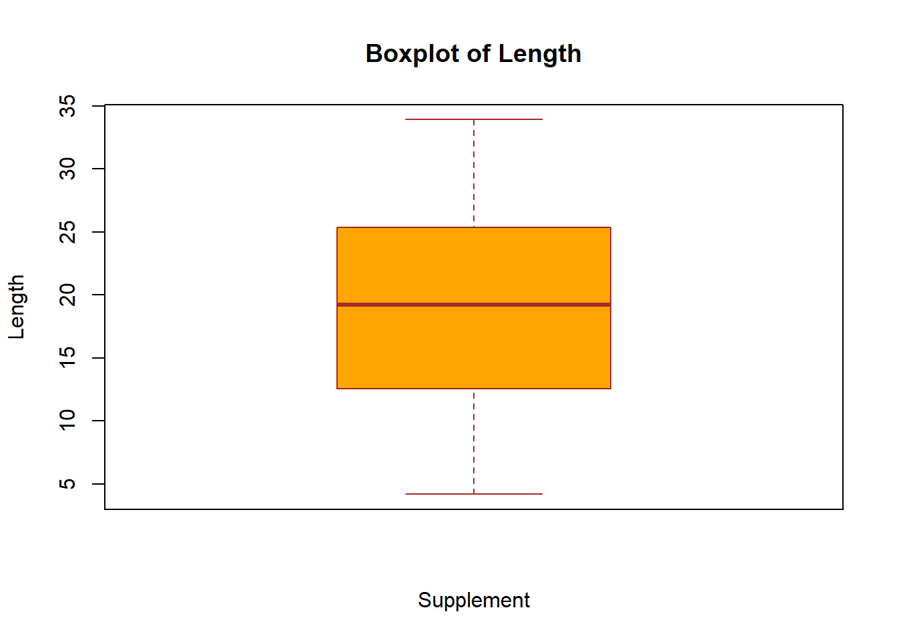
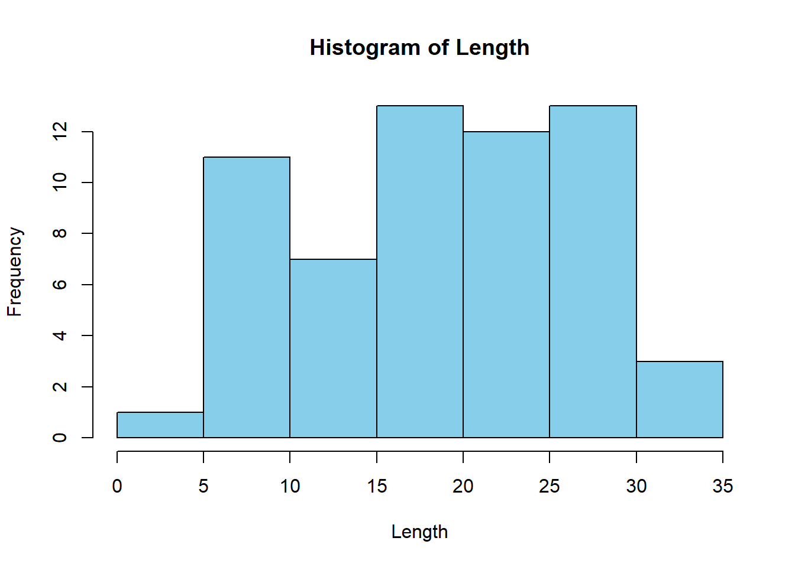
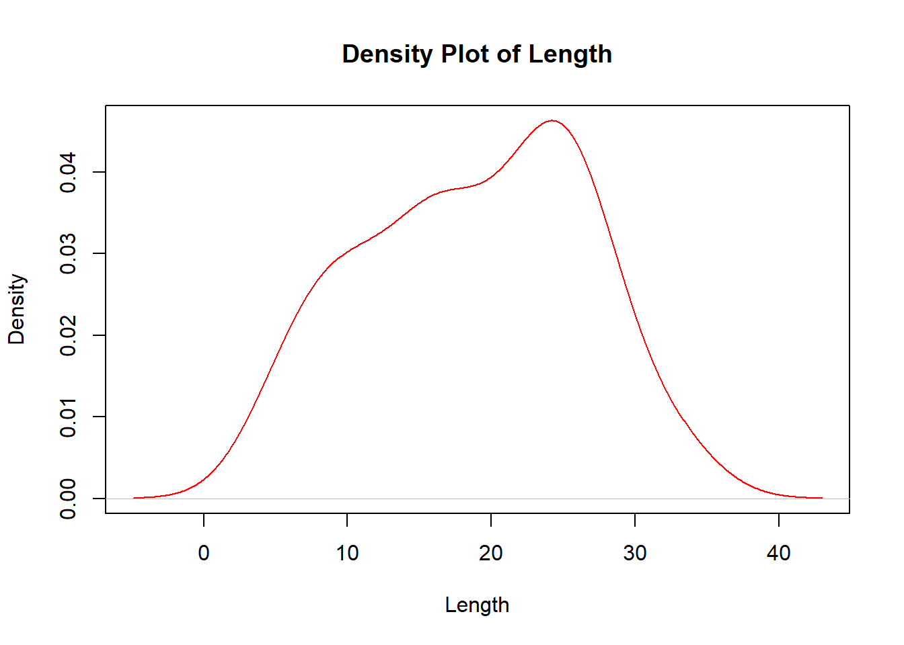
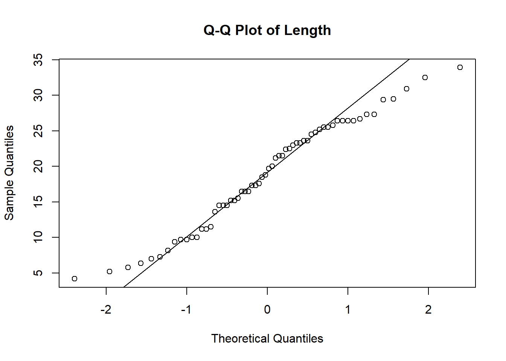
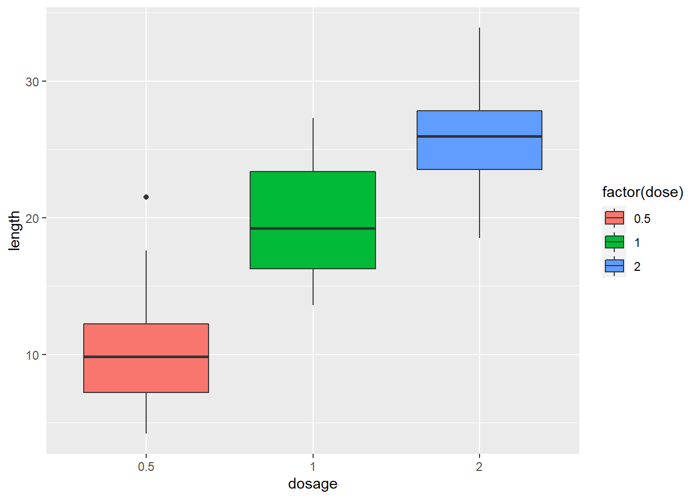

# Loading the ToothGrowth dataset
data(ToothGrowth)
library(ggplot2)tooth-growth-analysis
A Basic Statistical Analysis of the ToothGrowth Dataset (The Effect of Vitamin C on Tooth Growth in Guinea Pigs)
Overview
We’re going to analyze the ToothGrowth data in the R datasets package by:
Load the ToothGrowth data and perform some basic exploratory data analyses
Provide a basic summary of the data.
Use confidence intervals and/or hypothesis tests to compare tooth growth by supp and dose. (Only use the techniques from class, even if there’s other approaches worth considering)
State your conclusions and the assumptions needed for your conclusions.
About the data
The response is the length of odontoblasts (cells responsible for tooth growth) in 60 guinea pigs. Each animal received one of three dose levels of vitamin C (0.5, 1, and 2 mg/day) by one of two delivery methods, orange juice or ascorbic acid (a form of vitamin C and coded as VC).
Loading the dataset and the ggplot library
Basic infos
# Printing the structure of the dataset
str(ToothGrowth)'data.frame': 60 obs. of 3 variables:
$ len : num 4.2 11.5 7.3 5.8 6.4 10 11.2 11.2 5.2 7 ...
$ supp: Factor w/ 2 levels "OJ","VC": 2 2 2 2 2 2 2 2 2 2 ...
$ dose: num 0.5 0.5 0.5 0.5 0.5 0.5 0.5 0.5 0.5 0.5 ...# summary for the Supplement type
summary(ToothGrowth$supp)OJ VC
30 30 # summary for the Dose
summary(ToothGrowth$dose) Min. 1st Qu. Median Mean 3rd Qu. Max.
0.500 0.500 1.000 1.167 2.000 2.000 # Displaying the first few rows of the dataset
head(ToothGrowth) len supp dose
1 4.2 VC 0.5
2 11.5 VC 0.5
3 7.3 VC 0.5
4 5.8 VC 0.5
5 6.4 VC 0.5
6 10.0 VC 0.5# Basic statistics summary
summary(ToothGrowth) len supp dose
Min. : 4.20 OJ:30 Min. :0.500
1st Qu.:13.07 VC:30 1st Qu.:0.500
Median :19.25 Median :1.000
Mean :18.81 Mean :1.167
3rd Qu.:25.27 3rd Qu.:2.000
Max. :33.90 Max. :2.000 Some DataViz
# Boxplot for the variable 'len'
boxplot(ToothGrowth$len,
main="Boxplot of Length",
xlab="Supplement",
ylab="Length",
col=c("orange","green","blue"),
border="brown")
hist(ToothGrowth$len,
main="Histogram of Length",
xlab="Length",
ylab="Frequency",
col="skyblue")
plot(density(ToothGrowth$len),
main="Density Plot of Length",
xlab="Length",
ylab="Density",
col="red")
# Q-Q plot for checking normality of the variable 'len'
qqnorm(ToothGrowth$len,
main="Q-Q Plot of Length")
qqline(ToothGrowth$len)
cor(ToothGrowth[sapply(ToothGrowth, is.numeric)]) len dose
len 1.0000000 0.8026913
dose 0.8026913 1.0000000We can see that the length of the tooth and the dose of vitamin C have a high correlation.
plot1 <- ggplot(ToothGrowth, aes(x = factor(dose), y = len, fill = factor(dose)))
plot1 + geom_boxplot() + xlab("dosage") + ylab("length")
again, the boxplot clearly shows that as the dosage of vitamin C increases the length increases also.
Compare Tooth Growth by Dose and Supplement Type using Confidence Intervals and Testing.
The 95% Confidence Interval of Tooth Growth
# The mean of the tooth length
mu <- mean(ToothGrowth$len)
# The standard deviation of the tooth length
sigma <- sd(ToothGrowth$len)
# the 95% confidence interval
interval <- mu + c(-1,1) * qnorm(0.975) * sigma / sqrt(length(ToothGrowth))
interval[1] 10.15748 27.46919The T-Test by dose and supp
t.test(len ~ supp, data = ToothGrowth)
Welch Two Sample t-test
data: len by supp
t = 1.9153, df = 55.309, p-value = 0.06063
alternative hypothesis: true difference in means between group OJ and group VC is not equal to 0
95 percent confidence interval:
-0.1710156 7.5710156
sample estimates:
mean in group OJ mean in group VC
20.66333 16.96333 thus, we can’t reject the null hypothesis .
T-Test of the Dose level.
# create subsets of small, medium, and large dosage
dose1 <- subset(ToothGrowth, dose == 0.5)
dose2 <- subset(ToothGrowth, dose == 1)
dose3 <- subset(ToothGrowth, dose == 2)T-Test for small dasage
t.test(len~supp, data = dose1)
Welch Two Sample t-test
data: len by supp
t = 3.1697, df = 14.969, p-value = 0.006359
alternative hypothesis: true difference in means between group OJ and group VC is not equal to 0
95 percent confidence interval:
1.719057 8.780943
sample estimates:
mean in group OJ mean in group VC
13.23 7.98 T-Test for medium dosage
t.test(len~supp, data = dose2)
Welch Two Sample t-test
data: len by supp
t = 4.0328, df = 15.358, p-value = 0.001038
alternative hypothesis: true difference in means between group OJ and group VC is not equal to 0
95 percent confidence interval:
2.802148 9.057852
sample estimates:
mean in group OJ mean in group VC
22.70 16.77 T-Test for large dosage
t.test(len~supp, data = dose3)
Welch Two Sample t-test
data: len by supp
t = -0.046136, df = 14.04, p-value = 0.9639
alternative hypothesis: true difference in means between group OJ and group VC is not equal to 0
95 percent confidence interval:
-3.79807 3.63807
sample estimates:
mean in group OJ mean in group VC
26.06 26.14 for the 1st and the 2nd tests we have quietly small p-value, so we can reject the null hypothesis.
for the 3rd test, we have a high p-value of 0. 9639, thus we cannot reject the null hypothesis.
Conclusion
The tooth length growth has nothing to do with the supplements.
for the 0.5 and 1 dosages, Orange Juice (OJ) has a higher effect on the tooth length comparing the Vitamin C (VC).
for the dosage 2, there is no such difference between the OJ and VC supplements effect.